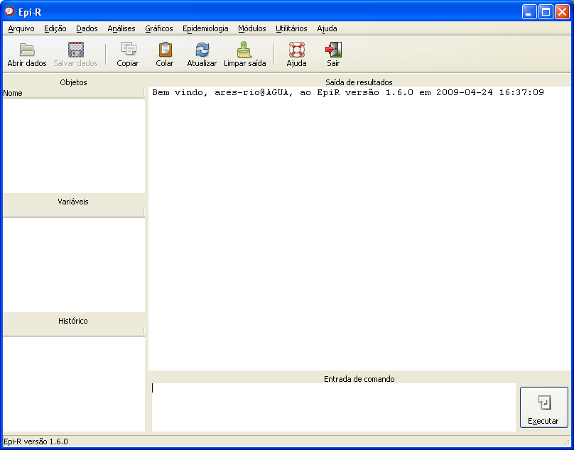

Janela
principal do Epi-R
Janela
principal do Epi-R

Figura
1. Janela principal do
Epi-R.
Abaixo, informações detalhadas sobre os campos e outras opções dessa janela.
Barra de menus
Permite buscar e acessar todas as ferramentas do aplicativo, desde a importação de um arquivo de dados até os comandos de análise e o menu de ajuda. Uma orientação direcionada para cada menu pode ser obtida aqui.
Barra de atalhos
Os ícones da barra de atalhos acessam diretamente as funções correspondentes, não sendo necessário utilizar a barra de menus. Para maiores detalhes sobre cada ícone, clicar na informação desejada na lista a seguir:
Variáveis
Ao abrir um objeto do tipo banco de dados, uma lista com o nome de cada variável é apresentada no campo "Lista de variáveis". Para visualizar essa lista, basta clicar uma vez sobre o objeto, no campo "Objetos". Quando estiver com mais de um banco abertos no Epi-R, a lista de variáveis será referente apenas àquele que estiver selecionado no outro campo.
Além disso, ao clicar duas vezes sobre o nome de uma variável, ela será enviada automaticamente para o campo "Entrada de comandos". Isso pode ser muito útil para usuários que optarem por trabalhar digitando os comandos, em vez de utilizar os menus de assistência.
Objetos
Sempre que iniciar uma sessão do Epi-R, todos os objetos abertos ou criados pelo usuário ficarão listados nesse campo (clique aqui para obter mais informações sobre como Abrir dados ou importar dados via ODBC).
No Epi-R, o conceito de objeto é o mesmo do que no R. Assim, são considerados objetos: bancos de dados, matrizes, listas, vetores, etc.
É importante lembrar que ao encerrar o Epi-R, os objetos que não tenham sido salvos serão perdidos (Obter informações sobre salvar dados).
Histórico
Nesse campo ficarão armazenados os comandos executados durante a utilização do aplicativo (tanto aqueles realizados com a utilização dos menus e assistentes, como os que forem digitados no campo "Entrada de comando"). Contudo, deve-se lembrar que apenas serão armazenados comandos que não contenham erros. Além disso, o campo não armazena comandos utilizados em sessões anteriores ou seja, não salva automaticamente esses comandos.
Para salvar os comandos armazenados no campo "Histórico", acesse o menu Arquivo
Para executar novamente um comando que esteja armazenado nesse campo, basta seguir os passos abaixo:
1. Clicar duas vezes na linha onde está o comando que deseja repetir - automaticamente ele aparecerá em "Entrada de comando";
2. Clicar no botão "Executar" localizado ao lado da "Entrada de comando".
Saída de resultados
Nesse campo serão apresentados os resultados dos comandos executados, ou seja, se o usuário solicitar um resumo breve de algumas variáveis, a tabela com as informações aparecerá nesse campo. Além disso, também serão mostrados os comandos que não geram resultados em tela, como abrir dados ou salvar histórico.
Deve-se lembrar que, com exceção do diagrama de ramos e folhas, os resultados gráficos possuem janela específica, que é aberta automaticamente quando necessário.
Entrada de comando
Esse campo traz a opção do usuário digitar os comandos que deseja executar, em vez de buscar as respectivas janelas utilizando a barra de menus. Uma vez que os comandos estejam digitados, basta clicar em "Executar" e os resultados serão mostrados na "Saída de resultados".
Se desejar escrever mais de um comando antes de "Executar", os comandos devem estar separados por ";".
Para sair do aplicativo, clique no botão "Sair" da barra de atalhos.